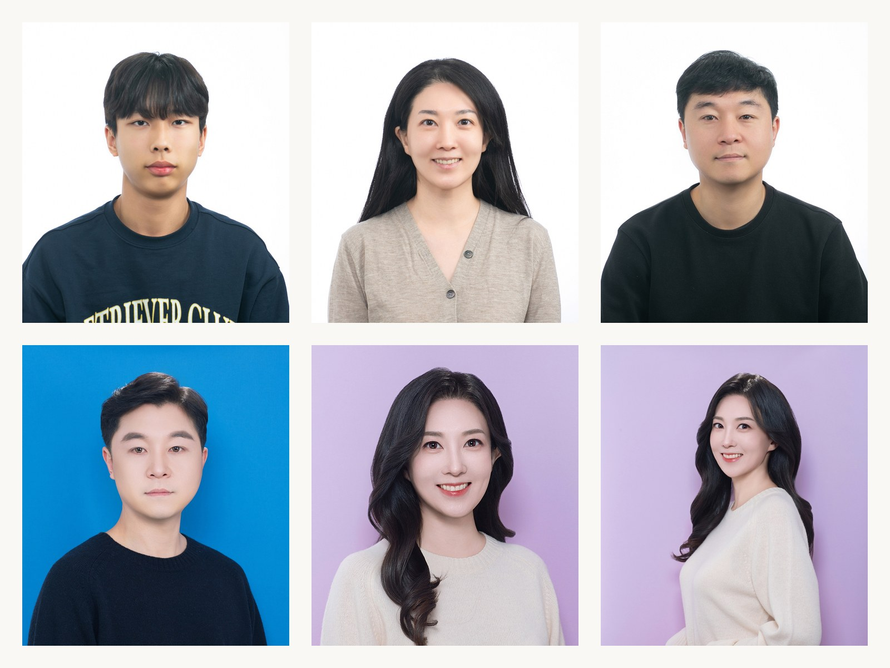
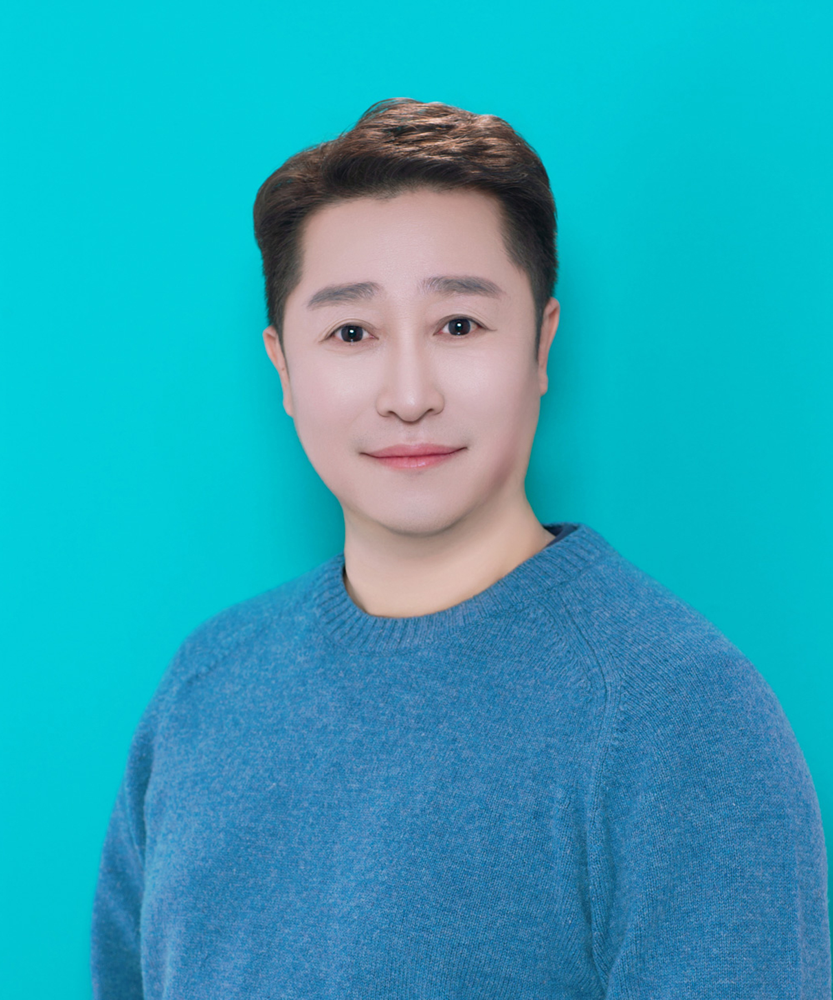
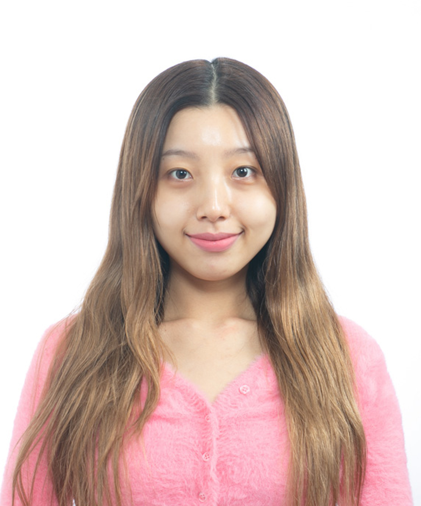
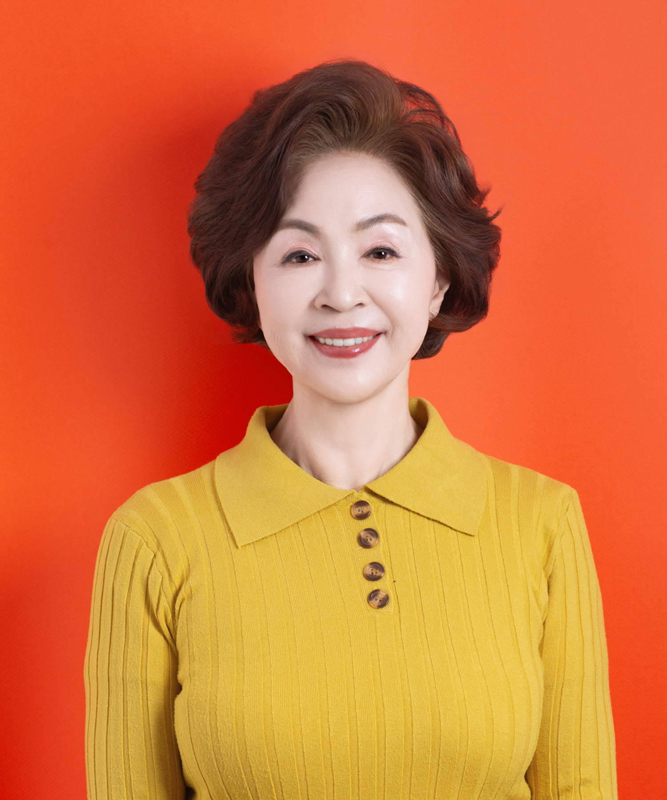
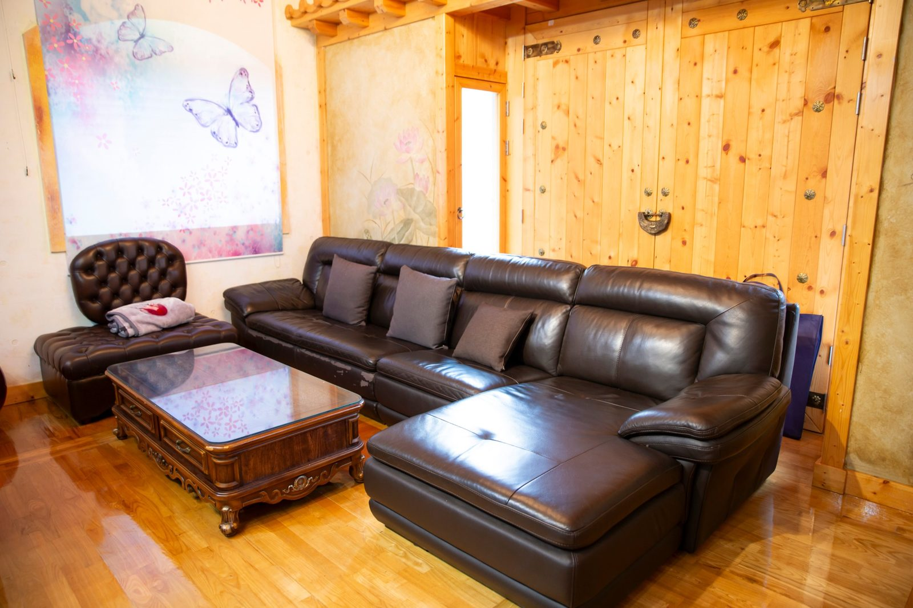
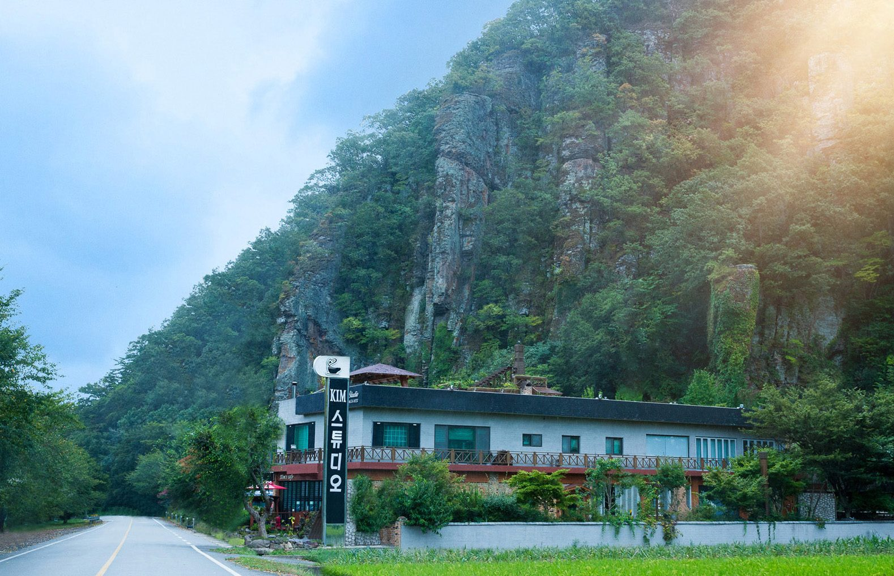
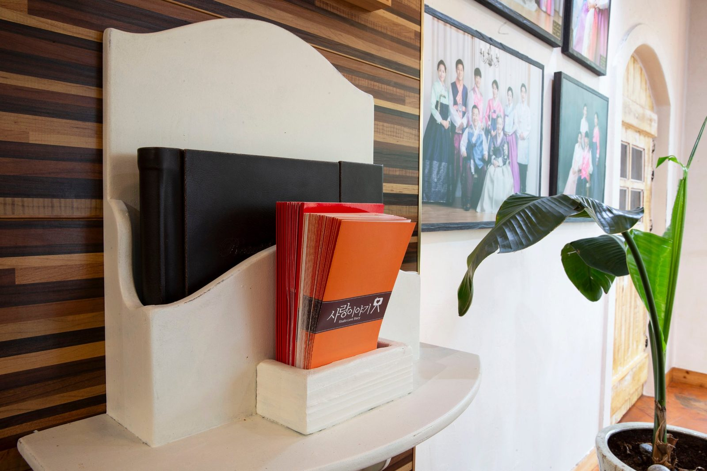
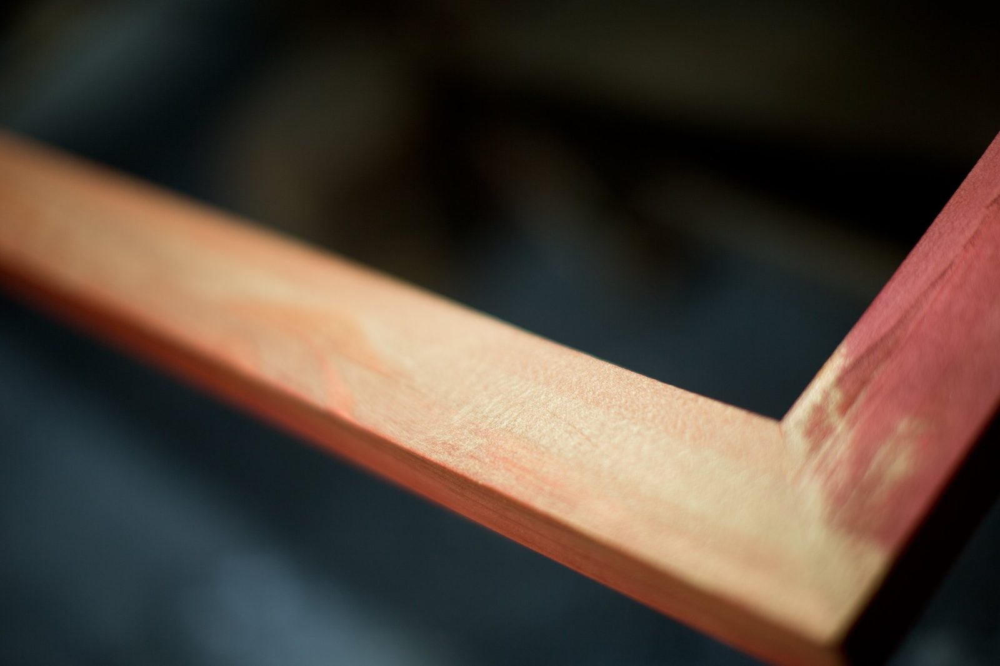

창원 증명사진 — 규정에 맞으면서 내 얼굴이 살아 있는 사진
2026-10-20 발행
창원 증명사진은 규격에 맞추는 일부터 시작합니다. 크기와 배경, 얼굴 비율, 눈과 귀의 노출까지 정해진 기준이 있습니다. 그런데 규정만 맞추다 보면 사진 속 얼굴이 남의 얼굴처럼 보일 때가 있습니다. 저희는 규정과 표정을 함께 잡습니다.

사랑이야기 스튜디오 창원점은 경남 창원시 성산구 원이대로 652, 상남동 롯데빌딩 2층에 있습니다. 증명사진과 여권사진, 비자사진, 이력서용 사진을 찍습니다. 촬영 후 바로 확인하시고, 필요하시면 파일로도 받으실 수 있습니다.
여권사진은 규격이 특히 까다롭습니다. 가로 35mm, 세로 45mm에 흰 배경, 최근 6개월 이내 촬영한 사진이어야 합니다. 정면을 바라보고 양쪽 귀와 눈썹이 드러나야 하며, 머리카락이 눈을 가리면 안 됩니다. 안경은 렌즈에 빛이 반사되지 않아야 하고, 그림자도 허용되지 않습니다.
증명사진은 용도에 따라 조금씩 다릅니다. 이력서용은 단정하게, 학생증은 조금 더 밝게, 자격증은 배경색이 정해진 경우가 많습니다. 접수처에서 요구하는 규격을 알고 오시면 한 번에 끝납니다. 모르고 오셔도 용도를 말씀해 주시면 맞춰 찍어 드립니다.

옷은 단정한 셔츠나 니트가 무난합니다. 흰 셔츠에 흰 배경이면 경계가 흐려지므로, 배경과 다른 색을 고르시는 편이 좋습니다. 정장을 입으셔도 좋지만 목선이 답답해 보이면 단추를 하나 푸셔도 됩니다. 사진은 얼굴이 중심이지 옷이 중심이 아닙니다.
표정은 웃는 얼굴이 좋습니다. 다만 크게 웃으면 눈이 가늘어져 눈동자가 잘 보이지 않을 수 있습니다. 입꼬리를 살짝 올리는 정도가 가장 자연스럽습니다. 긴장하시는 분은 촬영 전에 몇 마디 이야기를 나누고 시작합니다. 그 편이 표정이 훨씬 편합니다.


조명은 얼굴에 그림자가 지지 않게 잡습니다. 이마와 볼에 빛이 고르게 앉고, 코 밑과 턱 아래의 그림자는 부드럽게 만듭니다. 증명사진은 조명 하나로 인상이 달라집니다. 어둡게 찍히면 표정이 굳어 보이고, 너무 밝으면 윤곽이 사라집니다.
헤어와 화장도 중요합니다. 여성분은 머리를 넘겨 귀를 드러내시고, 눈썹이 보이도록 정리하시면 좋습니다. 화장은 평소보다 조금 진하게 해야 사진에서 자연스럽습니다. 남성분은 수염을 정리하고, 이마가 가려지지 않게 머리를 정돈하시면 됩니다.

아이 증명사진은 따로 준비가 필요합니다. 아이는 카메라를 3초 이상 바라보기 어렵습니다. 그래서 촬영 전에 인형이나 소리 나는 장난감으로 시선을 잡고, 준비가 되면 한 번에 찍습니다. 울거나 칭얼거리면 잠시 쉬었다가 다시 시작합니다.


어르신 여권사진도 많이 찍습니다. 요즘은 칠순·팔순에 해외여행을 다녀오시는 분들이 늘었습니다. 어르신은 앉아서 찍고, 필요하면 의자 높이를 조정합니다. 안경을 쓰셨다면 벗고 찍은 컷과 비교해 보시고 고르시면 됩니다.
사진이 마음에 들지 않으면 다시 찍습니다. 눈을 감았거나, 머리카락이 흘러내렸거나, 옷깃이 삐뚤어진 경우는 그 자리에서 바로 다시 찍습니다. 증명사진은 한 장으로 오래 쓰는 사진이라, 그 정도 시간은 들여야 한다고 생각합니다.

촬영은 길게 잡아도 15분 안팎입니다. 대기 손님이 있으면 순서대로 안내드리고, 급하시면 말씀해 주세요. 여권을 급히 내셔야 하는 경우에는 사진을 먼저 받아 가실 수 있게 준비합니다.
파일도 함께 받으실 수 있습니다. 온라인 접수나 이력서 첨부용으로 필요하신 경우, 촬영할 때 미리 말씀해 주시면 규격에 맞춰 준비해 드립니다. 인화본과 파일을 함께 받아 두시면 나중에 다시 오실 일이 줄어듭니다.
배경색도 용도에 따라 고르시면 됩니다. 여권과 비자는 흰 배경이 기본이고, 이력서나 프로필은 회색이나 연한 하늘색을 많이 씁니다. 배경이 밝으면 얼굴이 떠 보이고, 어두우면 차분해 보입니다. 몇 가지 배경으로 찍어 비교해 보시고 고르셔도 됩니다.
가족이 함께 증명사진을 찍는 경우도 있습니다. 아이 학생증, 부모님 여권, 할머니 장수사진까지 한 번에 오시는 집이 있습니다. 한 분씩 찍으면 시간이 걸리지만, 미리 인원을 알려 주시면 순서를 정해 두고 기다리는 시간을 줄여 드립니다.
사진을 고르는 기준은 하나입니다. 이 사진을 10년 뒤에 봐도 나답게 보이는가. 잘 나온 사진보다 나답게 나온 사진이 오래 갑니다. 여러 컷을 찍었을 때는 눈과 입매, 어깨선을 보고 함께 고릅니다. 혼자 결정하기 어려우시면 말씀해 주세요.
인화는 보통 6장이나 12장 단위로 준비합니다. 여권은 6장이면 넉넉하고, 이력서는 제출처마다 한 장씩 붙이니 조금 여유 있게 준비하시는 편이 좋습니다. 남은 사진은 봉투에 넣어 드리니 서랍에 두고 쓰시면 됩니다.
여권 갱신 시즌에는 주말 오후가 붐빕니다. 평일 오전이 가장 한산하고, 촬영도 차분하게 진행됩니다. 급하게 서류를 내셔야 한다면 평일 오전을 권합니다. 사진은 당일 받으실 수 있고, 인화가 밀리는 날은 잠시 기다리셔야 합니다.

증명사진은 작은 사진이지만 쓰이는 자리가 많습니다. 여권, 운전면허, 자격증, 이력서, 학생증, 그리고 집안의 상장까지. 그 작은 사진 하나가 첫인상을 만듭니다. 그래서 규정만 맞추는 사진보다, 얼굴이 살아 있는 사진을 찍습니다.
촬영 전에 준비하실 것이 있습니다. 여권용이면 기존 여권과 신분증을 챙기시고, 이력서용이면 접수처의 규격 안내를 캡처해 오시면 정확합니다. 자격증 시험은 배경색과 모자 착용 여부까지 정해진 경우가 있어, 안내문을 보여 주시는 편이 가장 빠릅니다.
사진을 다시 찍으러 오시는 분들도 있습니다. 다른 곳에서 찍은 사진이 규정에 걸렸다는 연락을 받은 경우입니다. 그런 경우에는 규격표를 함께 확인하고, 같은 문제가 반복되지 않게 촬영 방식을 바꿉니다. 재촬영은 예약 없이 오셔도 됩니다.
사진관에서 찍는 증명사진의 장점은 확인과 수정이 된다는 것입니다. 찍고, 보고, 다시 찍고, 그 자리에서 결정할 수 있습니다. 셀프 촬영이나 자동 촬영 부스에서는 이 과정이 어렵습니다. 서류에 붙일 사진이라면 이 차이가 생각보다 큽니다.

창원에서 증명사진을 찍으실 일이 있으면 상남동 롯데빌딩 2층으로 오시면 됩니다. 예약 없이 오셔도 되고, 단체로 오실 때는 미리 연락 주시면 시간을 나눠 안내드립니다. 처음 오시는 분도 부담 없이 말씀해 주세요.
자주 묻는 질문
Q. 여권사진 규격은 어떻게 되나요?
A. 가로 35mm, 세로 45mm에 흰 배경, 최근 6개월 이내 촬영한 정면 사진입니다. 귀와 눈썹이 드러나야 하고 안경 반사와 그림자가 없어야 합니다.
Q. 사진 파일도 받을 수 있나요?
A. 네. 온라인 접수나 이력서용으로 필요하시면 촬영 전에 말씀해 주세요. 규격에 맞춰 준비해 드립니다.
Q. 아이 증명사진도 찍을 수 있나요?
A. 네. 아이는 시선을 잡는 데 시간이 걸려 조금 더 여유를 두고 촬영합니다. 울면 잠시 쉬었다가 다시 찍습니다.

오시는 곳
사랑이야기창원점
- 주소 경남 창원시 성산구 원이대로 652, 상남동 롯데빌딩 2층
- 전화 055-287-8022
- 영업시간 오전 10:00 ~ 오후 7:00
- 예약 전화 상담 · 카카오톡 채널
- 주차 건물 지하 주차장
김작가사진이야기 의령
- 주소 경남 의령군 궁류면 청정로 1188
- 전화 055-574-3706
- 영업시간 오전 10:00 ~ 오후 7:00
- 예약 전화 상담 · 카카오톡 채널
- 주차 전용 주차장
이 글에 한마디
댓글창을 준비하고 있습니다. 그동안 궁금한 점은 카카오채널로 남겨 주시면 바로 답변드립니다.
카카오채널로 한마디 남기기